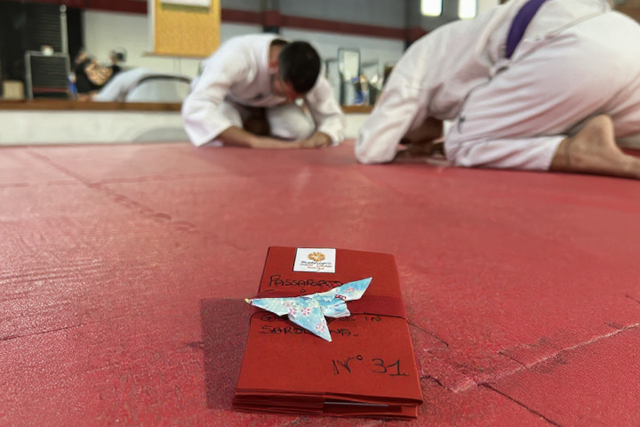

Festival Cultura giapponese in Sardegna
Nel 2026 (data ancora da definire), un evento dedicato a celebrare le arti, le tradizioni e la filosofia del Giappone. Parteciperemo come partner ufficiali con una lezione aperta al pubblico per far conoscere il Budo giapponese e la nostra scuola.
A breve tutte le informazioni, intanto ti invitiamo a seguire le pagine dell'evento:
